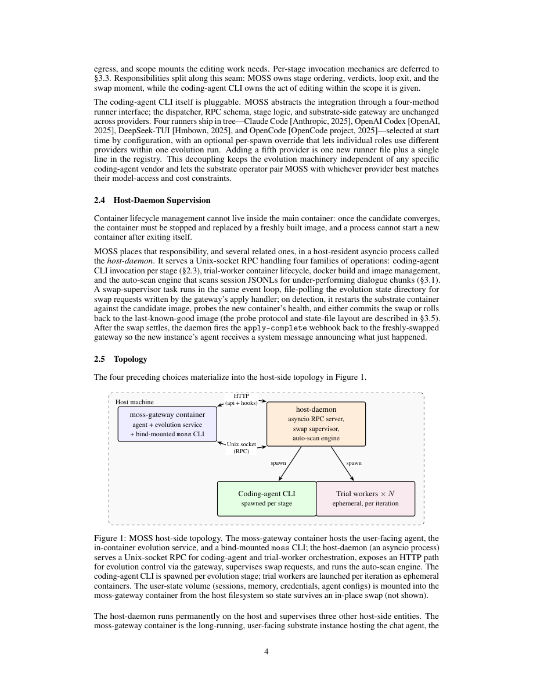

#1
★ 8/10
MOSS: Self-Evolution through Source-Level Rewriting in Autonomous Agent Systems
MOSS：通过源码级重写实现自主智能体系统的自我进化

图 Figure · Page 4 of paper
🎯 MOSS让智能体通过重写源代码实现自我进化
MOSS enables autonomous agents to self-improve by rewriting their own source code based on production failures.
| 维度 | 中文 | English |
|---|---|---|
| ❓ 待解决 的问题 |
已部署的自主智能体系统基本上是"静态"的——它们无法从用户交互中学习，也无法在没有人工干预的情况下修复反复出现的错误。现有的自我进化方法只能修改提示词、记忆模式或技能文件等文本层面的内容，无法触及代码中的路由逻辑、钩子顺序、状态不变量等结构性问题，导致一整类系统性故障始终无法被修复。 | Deployed autonomous agent systems are essentially frozen — they cannot learn from user interactions or fix recurring failures without a human engineer shipping an update. Prior self-evolving agent approaches only modify text-level artifacts like prompts, memory schemas, or skill files, which means structural bugs buried in routing logic, hook ordering, or dispatch code are completely out of reach. This leaves an entire class of real-world failures permanently unaddressed. |
| 💡 解决 的亮点 |
• 源码级重写：MOSS直接在智能体源代码上操作，这是一种图灵完备的介质，是所有文本可修改范围的严格超集，能够修复任何提示词或技能文件编辑都无法触及的结构性问题。 • 以失败证据为锚点：每次重写周期都基于自动整理的真实生产失败证据批次，确保修改具有针对性。 • 安全部署流水线：候选版本通过在临时试验容器中回放失败批次来验证，再经用户同意门控的原地容器热替换进行部署，并配备健康探针触发的自动回滚机制，兼顾安全性与可审计性。 | • Source-level rewriting: MOSS operates directly on the agent's source code — a Turing-complete medium that is a strict superset of all text-mutable scopes, enabling fixes that no prompt or skill-file edit could achieve. • Evidence-anchored evolution: Each rewrite cycle is grounded in an automatically curated batch of real production-failure evidence, ensuring changes are targeted and relevant. • Safe deployment pipeline: Candidates are validated by replaying failure batches in ephemeral trial workers, then promoted via user-consent-gated in-place container swaps with automatic health-probe-gated rollback, making the process both safe and auditable. |
| 🧪 实验 内容 |
作者在OpenClaw基准测试上对MOSS进行了评估，该基准包含四个不同的自主智能体任务。评估使用0到1范围内的评分器分数（grader score）作为主要指标来衡量任务完成质量。MOSS在没有任何人工干预的情况下运行了一个完整的自我进化周期，从部署在基准测试上的基线智能体出发，经过完整的源码重写流水线完成进化。 | The authors evaluated MOSS on OpenClaw, a benchmark for autonomous agentic tasks consisting of four distinct tasks. The evaluation used a grader score (ranging from 0 to 1) as the primary metric to assess task completion quality. MOSS ran for a single self-evolution cycle without any human intervention, starting from the baseline agent deployed on the benchmark and evolving through the full source-rewriting pipeline described in the paper. |
| 📊 实验 结果 |
在OpenClaw基准测试（四任务套件）上，MOSS在单次自我进化周期内将平均评分器分数从0.25提升至0.61，无需任何人工干预——绝对提升+0.36分，相对提升约144%。这一成果完全通过自动化的源码级代码重写和基于生产失败证据的流水线执行实现。 | On the OpenClaw benchmark (four-task suite), MOSS improved the mean grader score from 0.25 to 0.61 in a single self-evolution cycle with zero human intervention — a gain of +0.36 absolute points, representing a 144% relative improvement. This was achieved entirely through automated source-level code rewriting and production-failure-evidence-driven pipeline execution. |
| 🏁 结论 | MOSS证明了源码级自我重写是一种可行且强大的自主智能体改进机制，能够修复任何纯文本修改方法都无法解决的更广泛类别的故障。通过在一次无监督周期内将OpenClaw平均分从0.25提升至0.61，本文为生产级自我进化智能体系统树立了新的研究前沿。 | MOSS demonstrates that source-level self-rewriting is a viable and powerful mechanism for autonomous agent improvement, capable of addressing a strictly broader class of failures than any text-artifact-only approach. By lifting OpenClaw mean scores from 0.25 to 0.61 in one unsupervised cycle, the work establishes a new frontier for production-ready self-evolving agent systems. |
| 🔗 论文 链接 |
arXiv: 2605.22794v1 · 📥 PDF | |
⚙️ Method · 方法详解
MOSS实现了一套确定性的多阶段源码级自我重写流水线。首先，系统自动整理生产环境中的失败证据批次，作为每次进化周期的锚点。代码修改任务被委托给可插拔的外部编码智能体CLI（MOSS本身负责阶段编排和决策，而非直接生成代码）。候选修改镜像随后在临时试验容器中通过回放失败批次进行验证，确保修复真正解决了目标问题且没有引入新的回归错误。最终，经审核的候选版本通过用户同意门控的原地容器热替换部署到生产环境，并配备健康探针触发的自动回滚机制。
MOSS implements a deterministic multi-stage pipeline for source-level self-rewriting. First, it automatically curates batches of production-failure evidence to anchor each evolution cycle. Code modification is then delegated to a pluggable external coding-agent CLI (keeping MOSS itself responsible for stage ordering and verdicts, not raw code generation). Candidate modified images are validated by replaying the curated failure batch against them inside ephemeral trial worker containers, ensuring the fix actually resolves the targeted failures without regressions. Finally, approved candidates are promoted to production via a user-consent-gated, in-place container swap, with a health-probe-gated rollback mechanism ready if issues arise post-deployment.
🌟 Why It Matters · 为什么重要
本研究从根本上扩展了自我进化智能体能够修复的问题范围：通过在源代码层面操作，MOSS能够解决所有现有基于提示词或记忆的进化方法都看不见的结构性和架构性错误。如果这一范式能在更大规模上得到验证，将大幅降低维护已部署AI智能体系统所需的人工工程成本。
This work fundamentally expands the scope of what self-evolving agents can fix: by operating at the source-code level, MOSS can resolve structural and architectural bugs that are invisible to all existing prompt- or memory-based evolution methods. If validated at scale, this paradigm could dramatically reduce the human engineering overhead required to maintain deployed AI agent systems in production.